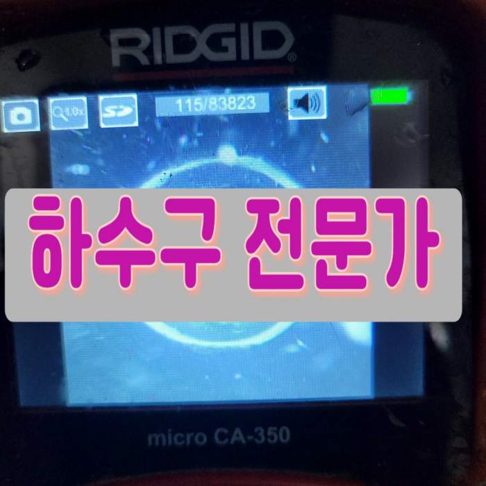
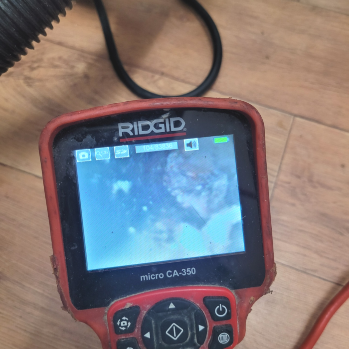
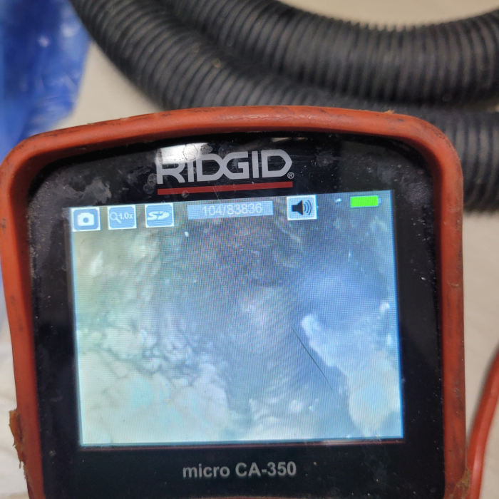
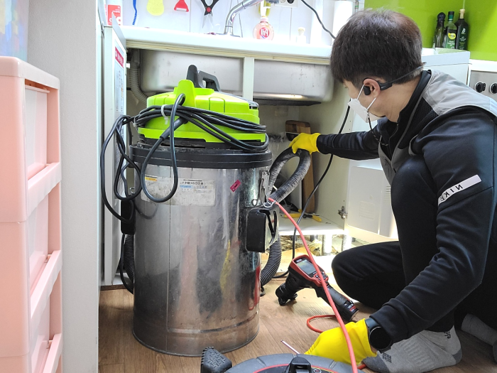
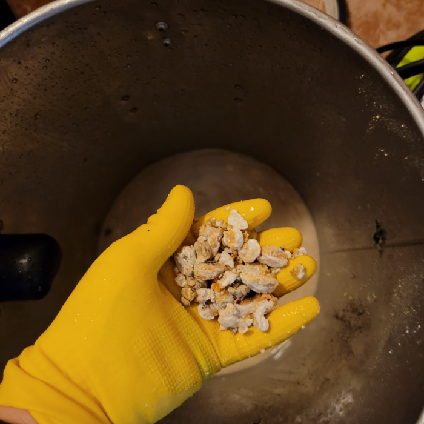
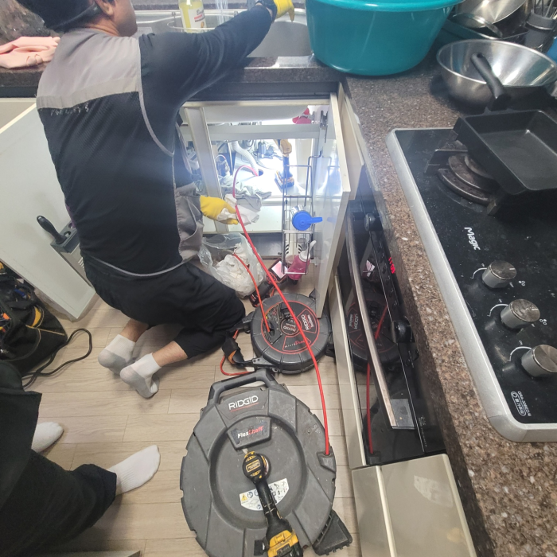

🏠 은행동 싱크대 막힘 성남 서현동 하수구 물 넘침 뚫어주는 전문 업체
성남 싱크대막힘 전문 시공 후기

📋 작업 개요
- 위치: 성남
- 서비스 유형: 싱크대막힘, 변기막힘, 하수구막힘, 배관막힘, 역류해결, 뚫는업체, 배관청소, 고압세척
- 작업 일시: 2025. 4. 18. 21:37
- 업체명: 하수구수사대 (010-5615-2118)
🔍 문제 상황
안녕하십니까^^
설비전문업체 "하수구수사대"를 찾아주셔서 고맙습니다.
사람들이 살아가는데 있어서 의식주는 필수인데요 그가운데 식을 담당하는 공간인 주방 배수구막힘이 생길경우 위생부분에서 걱정이 될 것입니다.
배관속에 사용했던 들어오면 괜찮지만 물 뿐 아니라 오만 이물질이 함께 흘러 들어가기때문에 이것을을 제대로 처리해줘야 합니다. 관으로 들어가버린 다양한 종류의 갖은 잡다한 물질들이 외부로 배출되지 못하면 퇴수구막힘증상이 나타날수 있어요.
성남 창곡동 싱크대배수관막힘 위례 하수구역류 기름때청소업체
배출구막힘의 원인을 해결하기 위한 단계로는 먼저 배관 내부에 쌓여있는 이물질들을 제거하기 위해서 청소작업을 진행하게 되었는데요. 저희는 많은 장비를 보유하고 있기 때문에 배관 내부의 상황에 맞는 장비를 이용해서 작업을 하게 됩니다.

🔎 원인 분석
💡 전문가 진단: 성남 창곡동 싱크대배수관막힘 위례 하수구역류 기름때청소업체
그래서 어떠한 물질이 배수관를 막고 있는지를 내시경 카메라를 통해서 확인을 하는 것이 필요합니다. 막혀있는 물질이 무엇이냐에 따라서 작업의 방향이 결정이 되고 또한 어떠한 장비를 사용해야 할지를 판단할 수 있습니다.
평소에 땅에 묻혀있는 하수관배관을 크게 신경을 쓰면서 살아가진 않지만 일상 속에서 막힘이 발생하지 않도록 가장 주의를 기울여야 하는 부분 중의 하나라고 할 수 있습니다. 갑자기 하수관배관이 막히게 되면 불편함이 많이 생기게 될 수밖에 없는데요.
너무 급한 생각에 급하게 행동을 취하고 여러 업체를 물어보고 이러다보면 더 지연되어 시간은 시간대로 흐르고 별로 좋지 않은 상황으로 이어지니 배수막힘이 발행하면 고민하고 있기 보단 즉시 연락을 취하시길 추천드립니다.
이럼으로 인해 하수장비를 얼마나 갖추고 있는지 면밀히 알아보세요. 점성이 있는 기름때들은 소량일지라도 하수관 안에 남겨두게 되면 쌓이기 시작해서 소량이었던 것이 증식해 버리게 되어 틀어막게 되는 것인데요.
빠르게 해결을 하는 것도 중요하지만 정확한 원인을 찾고 확실한 작업을 진행하는 것이 제일 중요하다고 할 수 있습니다. 특히 배출구막힘의 형태는 다양하고 배관 안은 육안으로는 확인이 어렵기 때문에 추측만으로 진행을 하게 되면 오히려 문제가 커질 수 있습니다. 저희는 배관 내시경 카메라 장비를 통해서 정확한 원인을 찾게 되는데요.
하수도뚫는 장비는 석션 작업은 필수적이고 샤프트와 석션의 장점을 잘 살려서 확실한 방향으로 작업을 진행해 주는 것입니다. 저희 업체에서는 하수도막힘이 재발하지 않도록 정확한 솔루션과 결과물을 드리고 있으며, 확실하게 뚫어드립니다.

🔧 작업 과정
그동안 머리카락이 조금씩 배관을 따라 흘러내려가 배관을 막히게 했던 것 같고, 빨래나 기타 세척과정에서 나오는 이물질들 또한 하수관배관으로 흘러내려가 켜켜이 쌓인 것이 원이 이 되었던 것 같습니다. 고객님께 상세하게 설명을 드리고, 이물질을 빼내는 작업을 시작하였습니다.
하수배관에 오염물이 단단하게 굳어 있는 걸 볼 수 있었으며 플렉스 샤프트 기기로 작업을 하기에는 이물질이 너무 많아서 스프링 장비를 사용하기로 했습니다. 스프링 장비는 하수배관 규격에 따라 사용할 수 있도록 노즐 사이즈가 다양하게 구성이 되어 있죠.
배출관 막힘 해결을 위해선 무슨장비가 필요할지정확히알수없어 전반적인수리에 악영향을끼치지않도록 빠짐없이 가지고있어야된답니다 가령고객님들이 전문가를선별하는과정에서 작은부분도 소홀히하지않으시면 내집의 귀중한하수관을 깨끗하게만들수있어요!
작성하는 글들은 사실만을 적시했고 오랜시간동안 많은 하수도들을 고쳐왔으며 이를통해 쌓은경험으로 고객님들의 청결한배관을위해 성심을다한답니다
간혹 무리하게 배관을 건드렸다고 오히려 간단하게 끝날 작업도 오래걸리고 오래된 퇴수구배관의 경우 배관 이탈 등의 문제로 인해 큰 작업이 되기도 한답니다. 단순막힘이 아닌 공용관이나 가지관 깊은곳에 슬러지로 인해 퇴수구 역류문제가 발행했다면 혼자서는 절대 해결할수 없는 문제입니다.
어떠한것보다 문제가발생하면 사용할수없어서 평소에생활이 불편해집니다.하수관역류를 안해야하지만 그렇게안된다면 상태가심각해집니다.
배출구 내부를 강한 힘으로 이물질들을 빨아들이기 시작하니, 먼지 덩어리는 물론이고 여러 가지 이물질들이 빨려 올라왔고 이 사이에 머리카락 덩어리도 상당량 올라왔습니다. 다행히 딱딱하게 고착화된 오물은 없는 것 같았습니다.
고객님은 상황의 심각성을 인지하지 못하고 급한 데로 옷걸이를 찾아서 하수구로 마구 찔러보셨다고 하는데요, 뚫릴 기미가 보이지 않았고, 겨우겨우 먼지 같은 이물질만 빼낼 수 있었다고 합니다. 그래서 안되겠다 싶어 전문설비업체를 검색하였고 저희에게 문의를 해주신 거였지요.
문제가 감지된 구간에 내시경을 넣고 관찰해 보니 역시 저희가 예상한 대로 하수배관의 마지막 구간 부근에서 일부 무너진 흔적이 보입니다.


✅ 작업 완료
빠르게 달려가겠습니다. 전문 장비가 있다고 좋은 업체라기보다는 하수도전문 장비가 있으면서 그걸 잘 다루는 전문가가 있어야 좋은 업체인데요, 저희는 그간 다양한 현장에서 쌓은 노하우와 실력으로 어느 현장에 더 문제없이 해결이 가능합니다.
내가 하지 못하는 일이라고 한다면 퇴수구전문가를 불러서 처리하시기 바랍니다. 그게 정답임을 잊지 마시기 바라며 지금 막혀서 당황하셨다면 저희가 바로 달려가도록 하겠습니다.
#하수구막힘 #하수구뚫음 #하수구역류 #씽크대막힘 #싱크대역류 #오수관막힘 #하수구청소 #욕실하수구막힘 #변기막힘 #하수구뚫는비용 #싱크대수리 #화장실막힘




⚠️ 주방 싱크대 배관 막힘 예방 수칙
- ✅ 기름기가 묻은 식기나 프라이팬은 설거지 전 키친타올로 반드시 기름때를 닦아내세요.
- ✅ 주기적으로 싱크대 개수대에 뜨거운 물을 가득 받아 한 번에 내려 배관 내부 기름을 씻어내세요.
- ✅ 배수구 거름망을 미세한 필터로 사용하시고 음식물 찌꺼기가 틈으로 새어 들지 않게 관리하세요.
- ✅ 베이킹소다와 식초를 뜨거운 물과 함께 일주일에 한 번씩 부어주면 배관 살균과 막힘 예방에 좋습니다.
💡 핵심 정리
- 확실한 장비 작업(내시경 점검 및 샤프트 스케일링)으로 원인을 뿌리 뽑습니다.
- 작업 후 1년 이내에 동일한 부위 재발 시 100% 무상 A/S 서비스를 보장합니다.
- 서울 · 경기 · 인천 전 지역에 24시간 언제든 긴급 출동할 수 있도록 항시 대기 중입니다.
❓ 자주 묻는 질문 (FAQ)
🚨 성남 싱크대막힘 문제로 고민이신가요?
정확한 원인 진단과 확실한 시공으로 재발 없는 해결을 약속드립니다.
24시간 긴급 출동 | 서울 · 경기 · 인천 전지역 | 1년 내 재발 시 무상 A/S